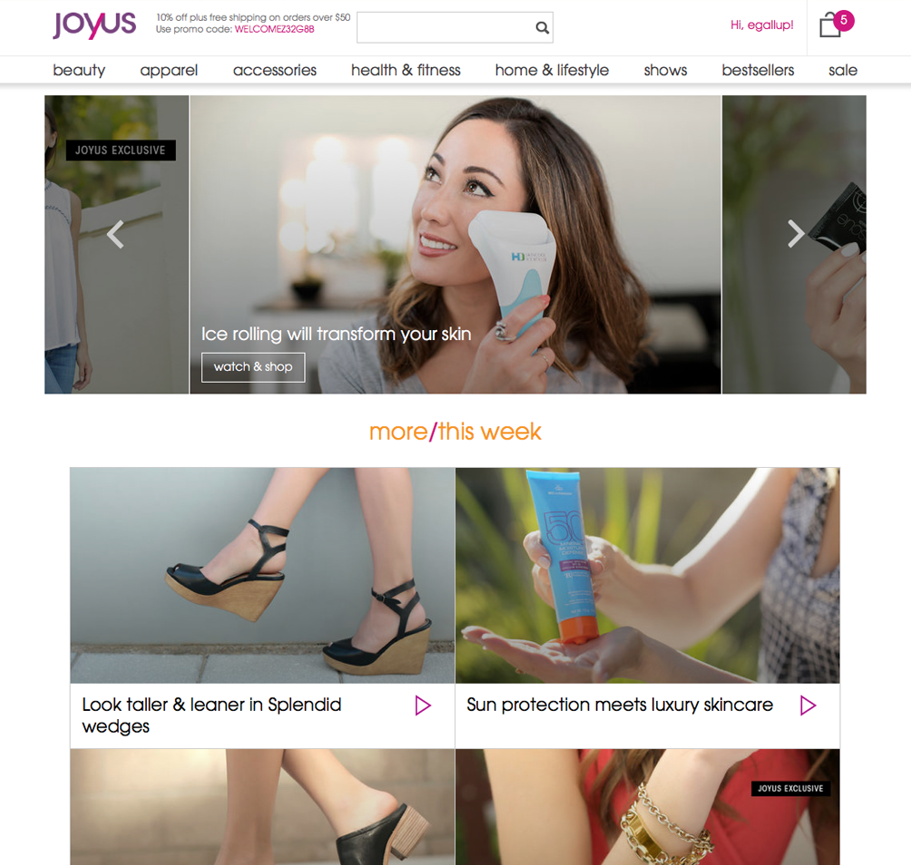
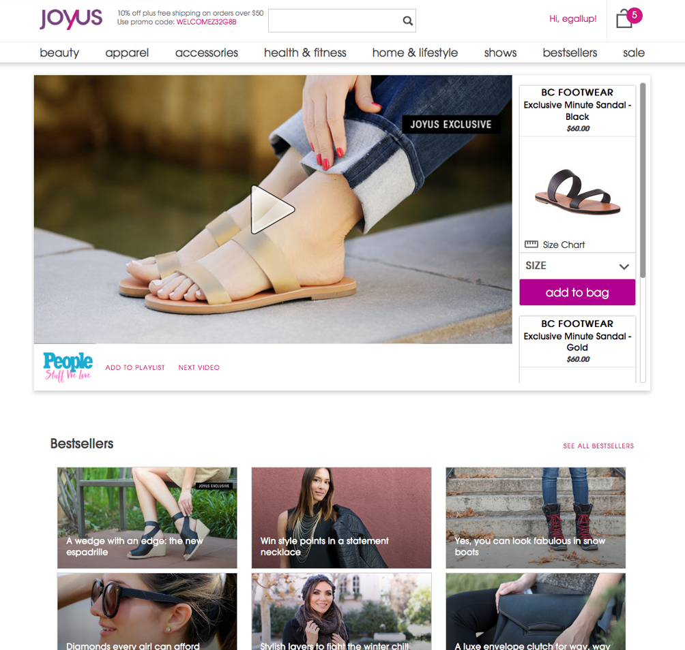
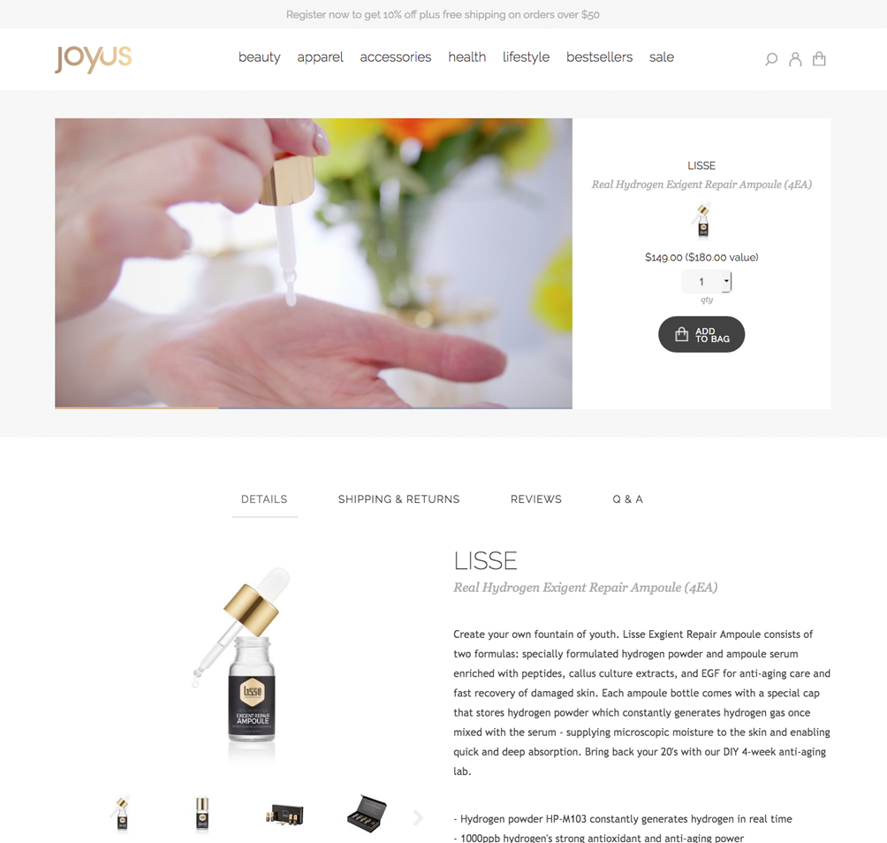
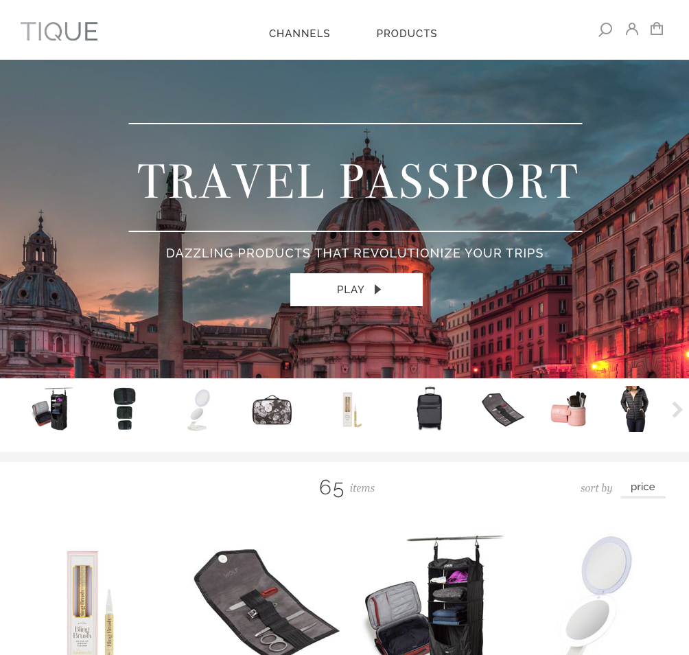

They are working people, aged 25-60 who use the internet to shop for the things they need. They are busy and don’t have the time or desire to visit shopping malls but still want the pleasure of curated product discovery, as well as an easy destination to buy gifts.
Joyus was one of the first online stores to use short hosted videos to sell products, and the first to partner with large publishers like Aol to promote goods through an embedded shoppable video player.
Create an umbrella company for Joyus to increase consumer reach and redesign the experience to simplify video shopping.
Creates a neutral environment for many new types of products
Allows Joyus to scale to accomodate more customers and appeal to more publishers
Becomes a one-stop shopping destination that aggregates many channels
Allows shoppers to learn about and buy products on sites like Aol.com
Joyus' old logo and branding were targeted towards older women, which limited its customer base. The site took several clicks for viewers to access video pages and the traditional ecommerce navigation required a lot of reading and comprehension.
 The first task was to update the Joyus logo to a neutral gold tone, which elevated the brand and allowed for an immediate update for the site transition. Other brand refreshes included updated typographic system and updated color palette, which were implemented across the site and all videos.
Next, the product detail page design was updated to make viewing and shopping easier.
An identity for the new umbrella site, Tique (a shortening of 'boutique') was created to be harmonious with the new Joyus brand yet be neutral so it could work for many different future channels. The logo was a subtle reference to a replay button.
The design for the Tique hub allowed for products to be grouped by thematic channels and their videos watched uninterrupted, without a page refresh.
The Tique channels page allowed for products to be grouped into infinite categories.
The future Joyus channel.
An example of a travel-themed channel.
Customers who preferred to find goods through a traditional ecommerce path are able to in the products area.
The product detail page used in Joyus' transition would be seemlessly integrated into the Tique website.
The shoppable player embedded into publisher websites like Aol stands out yet complements many sites.